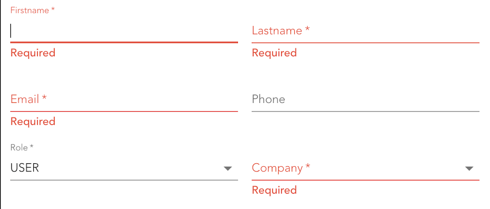

If you do conditional validation with zod you'll likely use the refine or superRefine methods to add logic. Let's say you have a role selection and depending on it's value you want to require a company field, i.e. if the role is USER the company field is required, otherwise not.
Now you define your schema object where company might be optional initially and a superRefine that checks the role value and adds an issue if it's USER and the company is not set. Testing your validation you notice that not all run, in particular the one for company, when you trigger them, e.g. via submit:
Your expectation probably looks like this:

The problem is described in this GitHub issue in detail. The short version is that the refine methods don't run if something else fails before. The solution is to split up your schema and use intersection to re-combine them. Here is an example for above form:
const schema1 = z
.object({
company: z.object({ id: z.any(), label: z.any() }).nullish(),
role: z.string().trim().min(1),
})
.superRefine((values, ctx) => {
if (values.role === 'USER' && !values.company) {
ctx.addIssue({
code: z.ZodIssueCode.custom,
message: 'Required',
path: ['company'],
})
}
})
const schema2 = z.object({
email: z.string().trim().min(1).email(),
firstName: z.string().trim().min(1),
lastName: z.string().trim().min(1),
phoneNumber: z.string().or(z.literal('')).nullish(),
})
const schema = z.intersection(schema1, schema2)